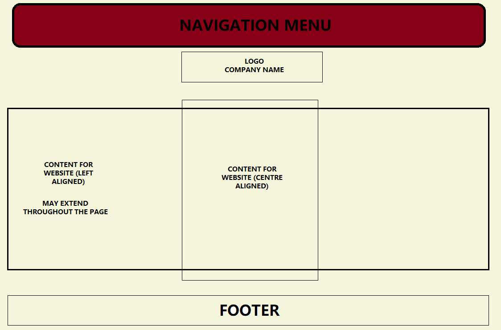

Design choices for HTML:
-
Appropriate common informations used in header and footer used in all 4 pages as mentioned in the requirements,
i.e. Headers with hyperlinks to "HOME", "NOW SHOWING" and "TICKETS" pages and footers to "HOME" and "DESIGN" pages.
-
Blocks used in every pages according to the requirements using the "div" tags, "header" and "footer" tags.
-
In the Home Page, the video clip of Casablanca is played in both .mp4 and .ogg formats to support multi-browser compatibility,
and the video also has a thumbnail (reference of source below) from the movie to make it more attractive.
-
In the Now Showing page, drop-down lists (options select) were used to let the user choose different cinema halls and showtimes,
and a screenshot of the map of Hong Kong's shopping malls have been used to show locations of cinema halls (reference below)
-
In the Tickets page, a table with appropriate border and rows and columns have been used to show seat arrangements, as per requirement,
and a confirm button will be used to confirm the booked seats, which then takes the user directly to the Print page.
-
No special formatting in the Print page, just the information of the tickets with the seat numbers.
References:
Design choices for CSS:
-

-
Only one stylesheet was used (references.css). This stylesheet contains the styling for the navigation menu, where the borders were added, the texts were centralized,
the font-style and colours were set, the background-color was set. The css stylesheet also has the common styling for the company name and the animation of the logo.
-
One feature that was used was the bordering of the navigation menu. Using border styling, a dotted border was given to it, with a border radius, which gave the borders
rounded edges. The border was also filled up with the colour goldenrod.
-
Another feature that was used was the font-styles. All texts in the webpages were given a common font-style of Times New Roman, which was added to the references.css as
part of *{}.
-
One more feature used was hovering effect of the hyperlinks. By default, the hyperlinks have a blue colour, but when hovered over, the cursor changes to a pointer, and the
text colour changes to red. The line that hyperlinks come with by default has been removed.
-
No outside sources were used.
Code for Javascript:
-
In Movies page, the movies.js was used which contain a getMovies() function, containing an array of movies and their information. An object "movies" was created using the
getMovies function. Then the pbject was used to insert innerHTML in the movies page to display movie information.
-
The videos are being created as a slideshow so that every video play on a loop within an interval of 2 seconds. This was done using a function, where the style.display is
'none' and then each video is made display.block one by one using a loop.
-
Only the Select Cinemas drop-down list could be made, which was created by iterating over and object created from the getMovies() function.